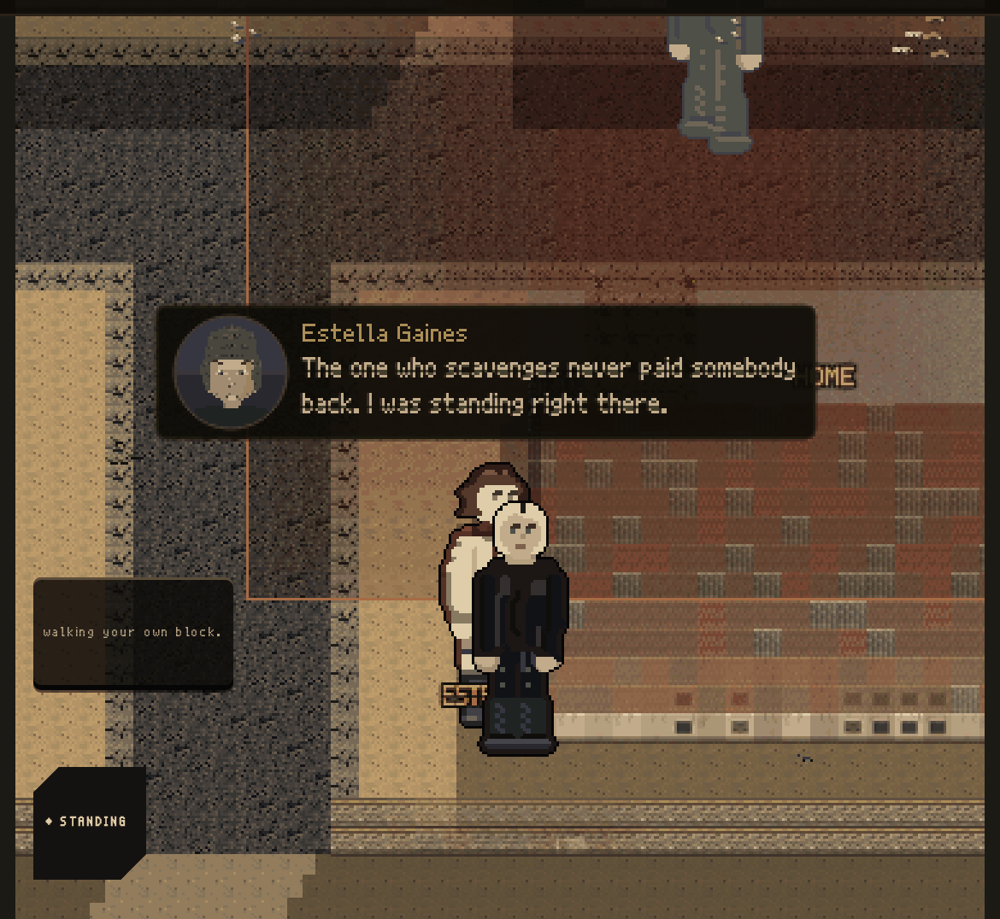
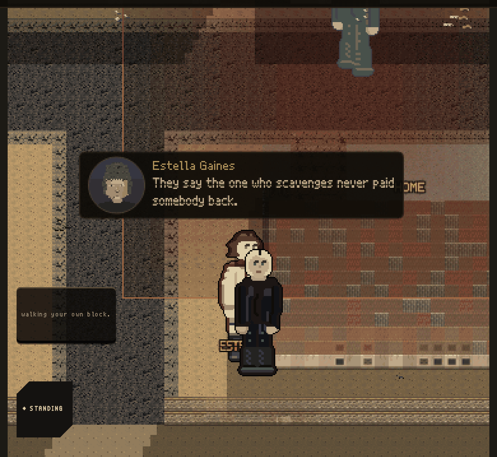
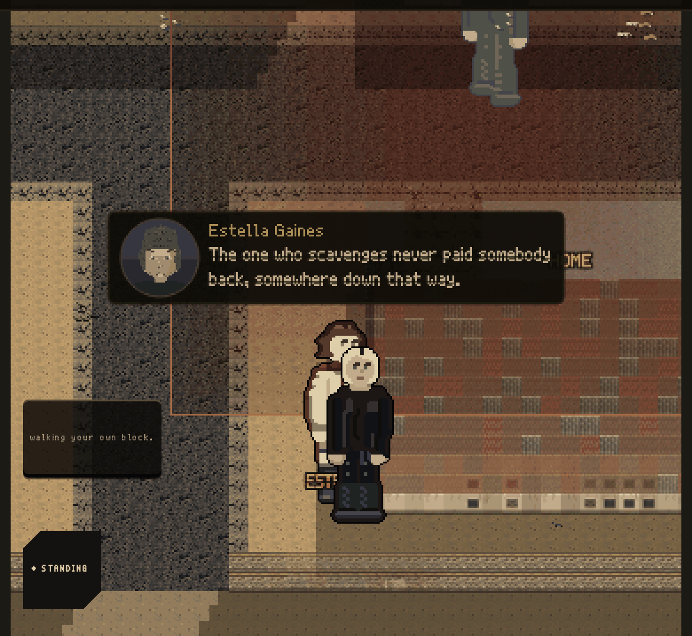
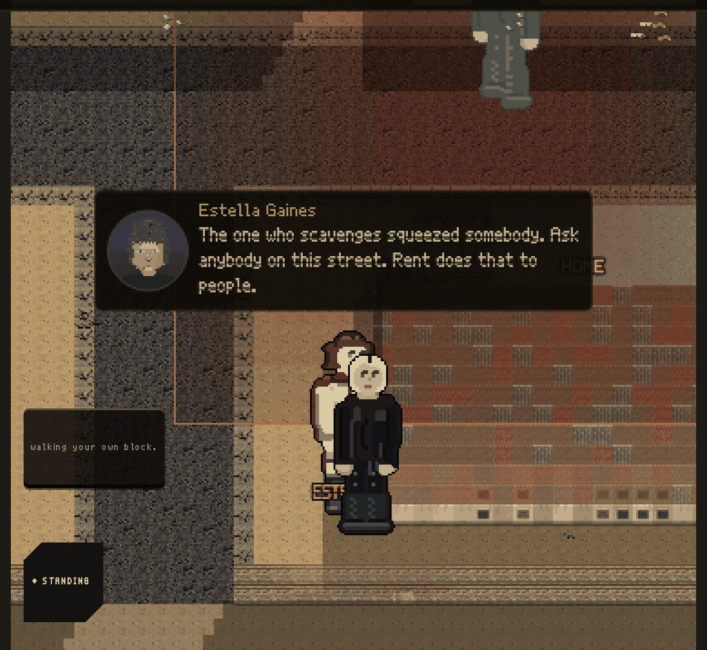

All six pictures are the real game. Same street, same woman talking. Six ways one story can come out of a mouth.
AND YOU FIXED THE NAMES. You said “wtf is the watch”, and you were right. The game was pointing at people with job words it never taught you. Nobody gets called a watch or a keeper any more. They get called what they actually do, and every one of those is something you can walk over and check. The second you ask somebody their name, you get the name instead.
Before this, the street said the same two sentences for every story it got wrong. 749 times out of 800. Now the more wrong a story is, the more sure the person sounds saying it.

1 · SHE WATCHED IT “The one who scavenges never paid somebody back. I was standing right there.”
True, and she was there. This is the only one of the six that is honest all the way through.

2 · SOMEBODY TOLD HER “They say the one who scavenges never paid somebody back.”
Passed on once and nothing has broken yet. She says it like what it is: something she was told.

3 · SHE LOST THE PLACE “The one who scavenges never paid somebody back, somewhere down that way.”
She knows she lost this bit, so she can be straight about it. She still points somewhere, because people always do.
4 · SHE LOST THE NIGHT “The one who scavenges never paid somebody back, some night this week.”
Same thing with the clock. A hole she can feel is a hole she will admit to.

5 · WRONG MAN, AND NO DOUBT AT ALL “The one who scavenges squeezed somebody. Ask anybody on this street. Rent does that to people.”
It was a different man and it was a smaller thing. Nobody who passed it on knew that, so nobody hedges. The last sentence is a reason she made up, and it tells you what this street believes about the valley.
6 · NOW SHE THINKS SHE SAW IT “The one who scavenges squeezed somebody. I was there, or near enough. Rent does that to people.”
Three tellings from the truth and she is claiming she watched it. She is not lying. That is a real thing people do, and it is the scariest one here. The “or near enough” is what is left of the doubt, and it is how you catch her.
Real research on rumours says doubt is the first thing a story loses, not the last. Our game had it backwards: it added doubt as a story travelled. And people only hedge about the part they know they lost. Nobody in the chain knows the wrong man got blamed, so nobody warns you.
Everybody on this street is honest and the story is still wrong. That is the whole idea.